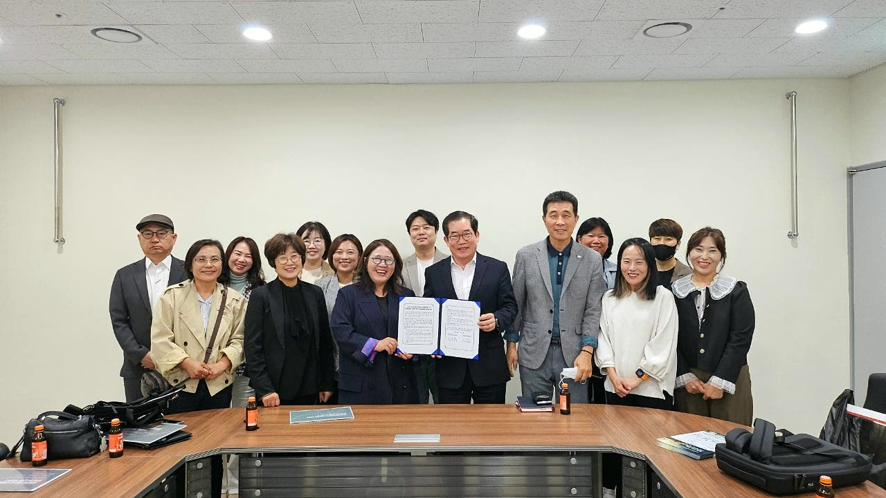

지원대상
상품별 지원대상을 확인하세요.
소상공인·자영업자
개인신용평점 하위 20%, 기초생활수급자·차상위계층, 근로장려금 신청자격 등 요건을 확인합니다.
청년·금융취약계층
청년 미래이음 대출, 청년운영자금 및 금융취약계층 생계자금의 상품별 추가요건을 확인합니다.

03사회적경제기업
사회적기업·예비사회적기업·사회적협동조합을 대상으로 평균 연매출 10억원 이하 등 별도 요건을 확인합니다.
대상에 해당하더라도 최종 지원 여부는 여신심사 결과에 따라 결정됩니다. 사업자 여부나 연령만으로 지원이 확정되지는 않습니다.
이용 절차
대출은 다음 절차로 진행됩니다.
- 01
지원상품 상담
전화 또는 방문으로
상황에 맞는 상품을 상담합니다. - 02
서류 준비·접수
지원요건을 확인하고
필요한 서류를 제출합니다. - 03
지원요건 심사
심사·현장실사 등을 거쳐
지원 여부와 조건을 결정합니다. - 04
약정 체결·대출 실행
대출 약정을 체결하고
대출금을 지급합니다.
사회연대금융은 온라인 평가자료 제출, 현장실사, 융자위원회 심의 등 추가 절차를 거칩니다. 처리기간은 서류 및 심사 상황에 따라 달라집니다.
사회연대금융 진행절차 자세히 보기서류 준비
준비서류, 하나씩 확인하세요.
상품별 기본 준비서류입니다. 개인별로 필요한 서류가 다를 수 있으니 방문 전에 전화로 확인해 주세요.
공통 준비서류
- 신분증 (주민등록증·운전면허증·여권 중 1개)
- 주민등록등본 (최근 1개월 이내 발급분)
- 수입·지출 확인서류 (부가세 과세표준증명, 카드매출집계표, 소득금액증명원 등 중 1개 이상)
- 개인(신용)정보 수집·이용·제공 동의서
- 개인(신용)정보 조회 동의서
운영자금·청년운영자금
- 사업자등록증명원 (최근 1개월 이내 발급분)
- 사업장 소유·임대 확인서류 중 1개 (사업장 임대차계약서 등)
- 경영교육 수료증 (4과목 또는 4시간 이상)
- 프리랜서: 3개월 이상 동일 사업 영위 확인서류, 재직증명서 또는 위촉계약서
사회연대금융
- 대출상담 및 차입신청서, 사업계획서 (서식은 상담 시 안내)
- 사회적기업 인증서·지정서·인가증 사본
- 법인등기사항전부증명서·법인인감증명서 (최근 3개월 이내 발급분)
- 신청기업의 정관 사본·주주(사원)명부 사본 (원본대조필)
- 대출 결의내역이 포함된 이사회·총회 의사록
- 최근 2개년 재무제표증명원
기업의 상황에 따라 추가서류가 필요할 수 있습니다. 온라인 평가자료는 사전상담 후 제출해 주세요.
청년 미래이음 대출
- 자금용도계획서
- ‘청년 모두를 위한 재무상담’ 이수 확인자료
- 근로유형별 증빙 중 1개 (재직증명서, 건강보험자격득실확인서, 위촉계약서, 사업자등록증명원 등)
금융취약계층 생계자금
- 사회적 배려대상자 증빙서류 등 대상 유형 확인자료
- 특별재난지역 거주 또는 사업영위 확인서류 (해당자)
- 근로유형별 증빙서류 또는 소득증명 관련 서류
피해 유형별 추가 증빙
- 전세사기 피해: 전세사기피해자 확인서류
- 불법사금융 피해: 사건사고사실확인원 등
- 보이스피싱 피해: 피해환급금 결정 통지서 등
해당 피해 유형의 증빙서류를 준비해 주세요. 개인별 상황에 따라 추가서류가 필요할 수 있습니다.
상환금 계산·서류 체크
상담 준비를
한곳에서 해보세요.
금액과 기간에 따른 예상 상환금을 계산하고,
상품별 준비서류를 체크할 수 있습니다.
Q.신용점수가 낮아도 상담받을 수 있나요?
Q.대출 금리와 한도는 어떻게 되나요?
자영업자 운영자금은 최대 2,000만원, 청년운영자금은 최대 3,000만원입니다. 거치금리는 연 2.0%, 상환 기본금리는 연 4.5%입니다.최저 연 3.5%성실상환 시 · 상환기간
청년 미래이음 대출은 최대 500만원, 기본금리는 연 4.5%입니다.최저 연 3.5%성실상환 시 · 상환기간
금융취약계층 생계자금은 최대 500만원입니다. 거치금리는 연 3.0%, 상환 기본금리는 연 4.5%입니다.최저 연 3.5%성실상환 시 · 상환기간
사회연대금융은 최대 1억원, 기본금리는 연 4.5%입니다.최저 연 4.0%우대요건 충족 시
Q.방문 전에 무엇을 준비하면 좋을까요?
Q.중도상환 수수료가 있나요?
Q.창업자금·시설개선자금도 신청할 수 있나요?
Q.상담 전에 어떤 사항을 확인하나요?
Q.성실상환하면 금리가 얼마나 낮아지나요?
Q.홈페이지에서 대출 신청을 완료할 수 있나요?
상담 안내
대출 상담이 필요하신가요?
편하게 문의해 주세요.
지원대상과 준비서류가 궁금하시면
전화로 문의해 주세요.
미소금융 부산중구법인
부산중구법인
오시는 길
부산광역시 중구 중앙대로 21부산데파트 1층(구 BNK부산은행)
서민금융통합지원센터 (우) 48955
- 상담시간
- 평일 09:00–18:00
- 점심시간
- 11:40–12:40
- 팩스
- 051-255-0076
주말·공휴일 휴무 · 방문 전 전화 문의 권장
네이버 지도로 길찾기